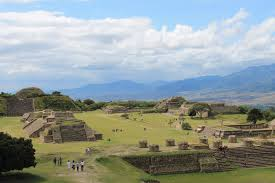

Cultura Viva y Sabores Ancestrales
Oaxaca es un tesoro mexicano donde la historia zapoteca y mixteca se funde con la belleza colonial y playas vírgenes en el Pacífico.


¿Qué vivir en Oaxaca?
- Explorar las ruinas milenarias de Monte Albán.
- Probar los siete moles tradicionales y el auténtico mezcal.
- Visitar el árbol del Tule, el más ancho del mundo.
- Disfrutar del color y música de la Guelaguetza.
Ubicación y Patrimonio
Oaxaca se localiza en la región sur de México. Limita al norte con Puebla y Veracruz, al este con Chiapas y al oeste con Guerrero.
Su capital, Oaxaca de Juárez, es Patrimonio de la Humanidad por la UNESCO gracias a su arquitectura y legado histórico.
Posee una de las geografías más complejas del país, con la intersección de la Sierra Madre del Sur y la Sierra Atravesada.
Es el estado con mayor diversidad cultural, albergando a 16 grupos etnolingüísticos diferentes que mantienen vivas sus tradiciones.
Dato clave: Oaxaca es la cuna del Benemérito de las Américas, Benito Juárez. Además,
es mundialmente famoso por su "Barro Negro", los alebrijes de Arrazola y por ser el mayor productor de Mezcal artesanal en el mundo.